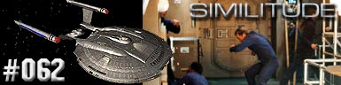
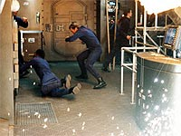

|
Enterprise
Temporada 3

Anlise do episdio por
Salvador Nogueira



|
MANCHETE
DO EPISDIO |
Comentrios: 
"Similitude" mais uma vez aposta na tradicional frmula de
Jornada nas Estrelas, com uma discusso atual e relevante transposta para a fico cientfica. correto criar um ser meramente para salvar outro? A discusso j polmica quando diz respeito a embries com um punhado de clulas, mas pode ficar ainda mais complicado se o ser produzido um clone consciente, destinado a viver apenas 15 dias.
Temos aqui uma das raras ocasies em que o episdio no oferece uma sada fcil --ou mesmo tica-- para os personagens. O mais bem-sucedido uso desse recurso foi no clssico segmento de
Deep Space Nine "In the Pale Moonlight". Em termos de qualidade de roteiro, um sacrilgio compar-lo a
"Similitude"; a sofisticao est muito alm de tudo que j foi visto em
Enterprise at agora.
Entretanto, isso no tira o mrito do presente episdio; trata-se de uma pea muito bem roteirizada, produzida e interpretada. Em primeiro lugar, Archer precisa dar a ordem para criar uma cpia de Trip que possa fornecer tecido neurolgico compatvel para a cirurgia que ir salv-lo. A primeira impresso a de que se trata de uma "falsa encrenca", apenas para ter a oportunidade de criar uma histria tpica de clones.
Ao longo da histria, felizmente, percebemos que Sim, o clone, muito mais que mero elemento de diverso a bordo; sua presena consiste num lembrete cada vez mais gritante do erro em que Archer incorreu. Ao mesmo tempo, era sua nica opo para salvar o engenheiro-chefe da nave, que alm de grande amigo pessoal, um elemento fundamental no sucesso da misso da Enterprise. Ou seja, no havia na verdade uma coisa certa a fazer. O capito fez o que julgou correto, e suas aes levaram a situaes que ele no gostaria de ter de enfrentar.
Desde o segundo ou terceiro dia de vida, Sim soube que havia sido artificialmente criado para salvar Trip. Isso no impediu, entretanto, que ele tentasse tomar as rdeas da sua prpria vida, propondo um tratamento que poderia, em vez de salvar Trip, salvar a si mesmo, desacelerando seu ritmo de envelhecimento. Um outro dilema para Archer: deveria ele autorizar um esforo para salvar Sim, o que inevitavelmente mataria Trip, ou vice-versa?
Mais: que diferena faria, na verdade, entre ter Sim ou Trip, para efeito da misso, uma vez que o clone tinha todas as memrias e habilidades do engenheiro? O drama era s proteger a misso, ou Archer estava ultrapassando todas as barreiras para salvar seu amigo?
A princpio, podemos dizer que o capito ainda estava pensando na misso: o tratamento que poderia salvar Sim tinha uma chance nfima de sucesso --muito menor que o que seria aplicado para salvar Trip. Apostando no engenheiro-chefe, ele teria mais chances de terminar com pelo menos uma das "cpias".
Por outro lado, o roteiro muito inteligente na hora de enfatizar a real motivao de Archer, ajudado por uma bela interpretao de Scott Bakula. Num dado momento, nervoso e gritando, o capito brada: "Eu preciso de Trip! TRIP!" S isso j deixa claro o que est em jogo para ele ali. seu grande amigo em coma na enfermaria, e ele pretende salv-lo, no importando o custo.
E nunca um capito em Jornada nas Estrelas foi to direto ou autoritrio para fazer isso ( bom lembrar que Sisko, em
"In the Pale Moonlight", foi mais uma vtima das circunstncias que escaparam ao seu controle do que um assassino frio e calculista). Archer diz que, se preciso fosse, ele mataria Sim. A discusso acaba convencendo Sim a se sacrificar por Trip. Mas est longe de ser um sacrifcio nobre --a coisa fica meio com cara de execuo.
E a est a beleza do episdio --ele no foge das questes difceis. Coloca Archer numa posio em que raras vezes so colocados os heris -- quando se cobra deles o preo de sua moralidade. Trata-se de um movimento audacioso.
De resto, a presena de Sim a bordo ajuda a realar o relacionamento de Trip com T'Pol. Por conta de suas aes, descobrimos que o engenheiro em coma tem sim um interesse romntico pela Vulcana, e isso soa muito mais real do que a suposta atrao mtua entre Archer e T'Pol primeiro apresentada em
"A Night em Sickbay" e convenientemente reforada em "Twilight".
Embora seja meio no-Vulcano o ato descontrolado de T'Pol, ao beijar Sim, acho que a audincia pode viver com isso, dada a qualidade do dilema vivido pelo personagem, que no sabe se sua paixo por T'Pol dele mesmo ou algo que ele herdou de Trip.
E o final do episdio exatamente igual ao comeo, com o ritual funerrio de Sim (que, no prlogo, temos a impresso de ser Trip). Sim, mais uma vez os roteiristas apelam para um enredo em flashback, para valorizar a abertura do segmento. Talvez seja o nico erro narrativo do episdio, no por seu uso aqui, mas pelo vcio crescente dos escritores da srie em no abandonar o recurso.
Do ponto de vista cientfico, "Similitude" exige, sim, um bocado de suspenso da descrena. a polmica atual das clulas-tronco embrionrias humanas elevada ao quadrado ou ao cubo, com criaturas que herdam memrias geneticamente (um absurdo j visto antes em
Jornada nas Estrelas) e tm metabolismo extremamente acelerado (outro absurdo tpico de Jornada), mas ainda assim oferecem tecido sadio para um transplante.
Apesar disso, um verdadeiro prazer deixar esses detalhes de lado, quando o drama humano to bem-executado. So picuinhas que caem bem nos episdios de ao, mas no nos grandes roteiros da franquia, como o caso deste aqui.
Sim - "I have his memories, I have his feelings, I have his body. How am I not Trip?"
("Eu tenho suas memrias, seus sentimentos, seu corpo. Como eu no sou Trip?")
Archer - "Commander Tucker is lying in Sickbay."
("O comandante Tucker est deitado na enfermaria.")
Sim - "Then what am I? Just something you grew in a lab? Does that make it easier for you to condemn me to death?"
("Ento o que eu sou? Somente algo que voc cultivou num laboratrio? Isso torna mais fcil me condenar morte?")
Archer - "Ill take whatever steps necessary to save him."
("Eu tomarei todas as aes necessrias para salv-lo.")
Sim - "Even if it means killing me."
("Mesmo que signifique me matar.")
Archer - "Even if it means killing you."
("Mesmo que signifique te matar.")
Sim - "Youre not a murderer."
("Voc no um assassino.")
Archer - "Dont make me one."
("No me transforme num.")
 Scott Bakula comentou o episdio. "Ele envolve uma exploso na nave que fere gravemente Trip, e um esforo para clonar Trip a fim de substituir a parte de seu crebro que foi danificada. No quero entregar muito mais, porque realmente interessante e lida um bocado com as questes essenciais ligadas a clonagem."
Scott Bakula comentou o episdio. "Ele envolve uma exploso na nave que fere gravemente Trip, e um esforo para clonar Trip a fim de substituir a parte de seu crebro que foi danificada. No quero entregar muito mais, porque realmente interessante e lida um bocado com as questes essenciais ligadas a clonagem."
 Esse foi o primeiro episdio da srie escrito por Manny Coto. O roteirista foi criador e produtor-executivo da srie "Odyssey 5" e antes escreveu roteiros para "Tales From the Crypt". A partir da quarta temporada, ele assumiria a funo de chefe da equipe de escritores de
Enterprise.
Esse foi o primeiro episdio da srie escrito por Manny Coto. O roteirista foi criador e produtor-executivo da srie "Odyssey 5" e antes escreveu roteiros para "Tales From the Crypt". A partir da quarta temporada, ele assumiria a funo de chefe da equipe de escritores de
Enterprise.
 As filmagens foram concludas em 9 de setembro de 2003, aps sete dias.
As filmagens foram concludas em 9 de setembro de 2003, aps sete dias.
 A msica deste episdio, composta por Velton Ray Bunch, ganhou um Emmy para a srie.
A msica deste episdio, composta por Velton Ray Bunch, ganhou um Emmy para a srie.
Escrito por Manny Coto
Direo de LeVar Burton
Exibido em 19/11/2003
Produo:
062
Elenco:
Scott
Bakula como Jonathan Archer
Jolene Blalock como
T'Pol
John Billingsley
como Phlox
Anthony Montgomery
como Travis Mayweather
Connor Trinneer como
Charlie 'Trip' Tucker III
Dominic Keating como
Malcolm Reed
Linda Park como Hoshi Sato
Elenco convidado:
Shane Sweet como Sim-Trip (17 anos)
Adam Taylor Gordon como Sim-Trip (8 anos)
Maximillian Kesmodel como Sim-Trip (4 anos)